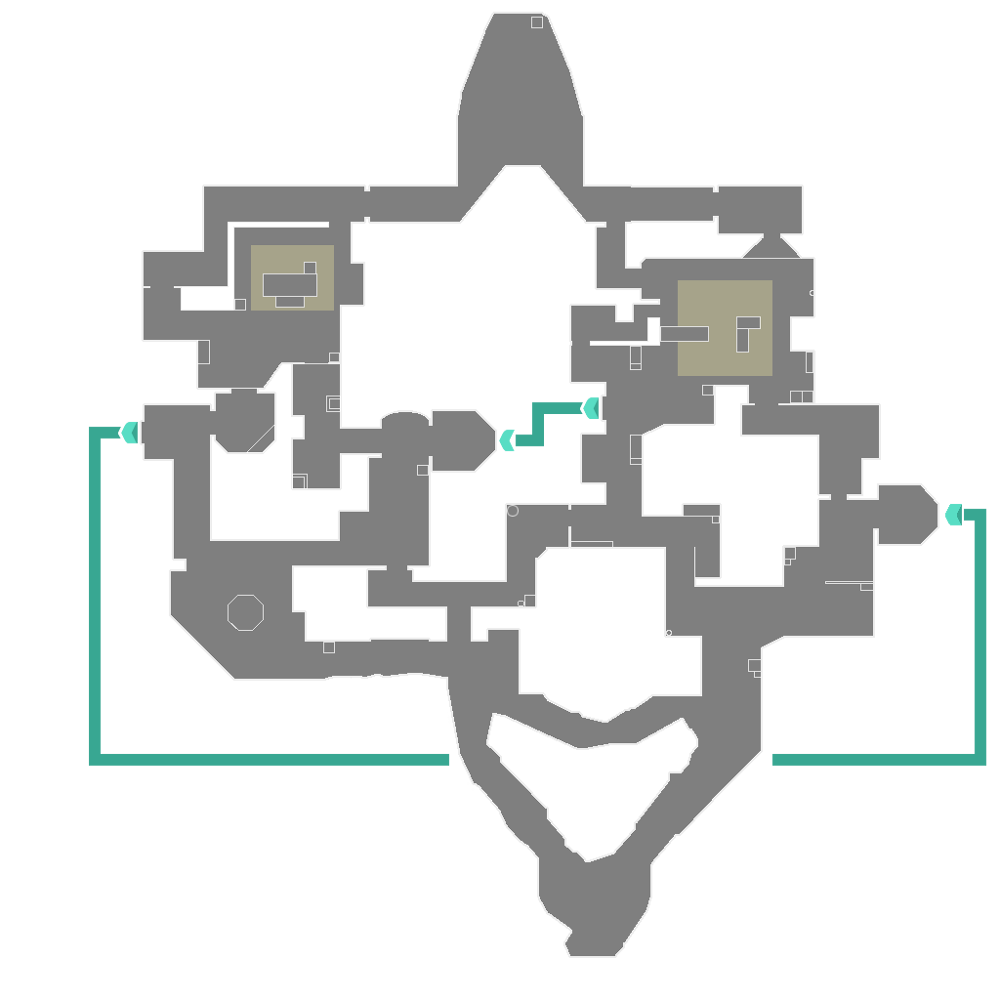
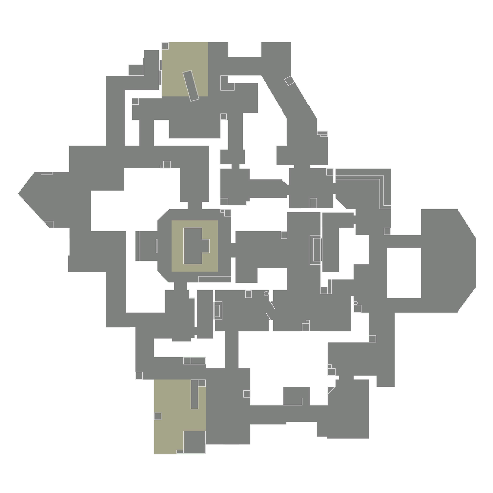
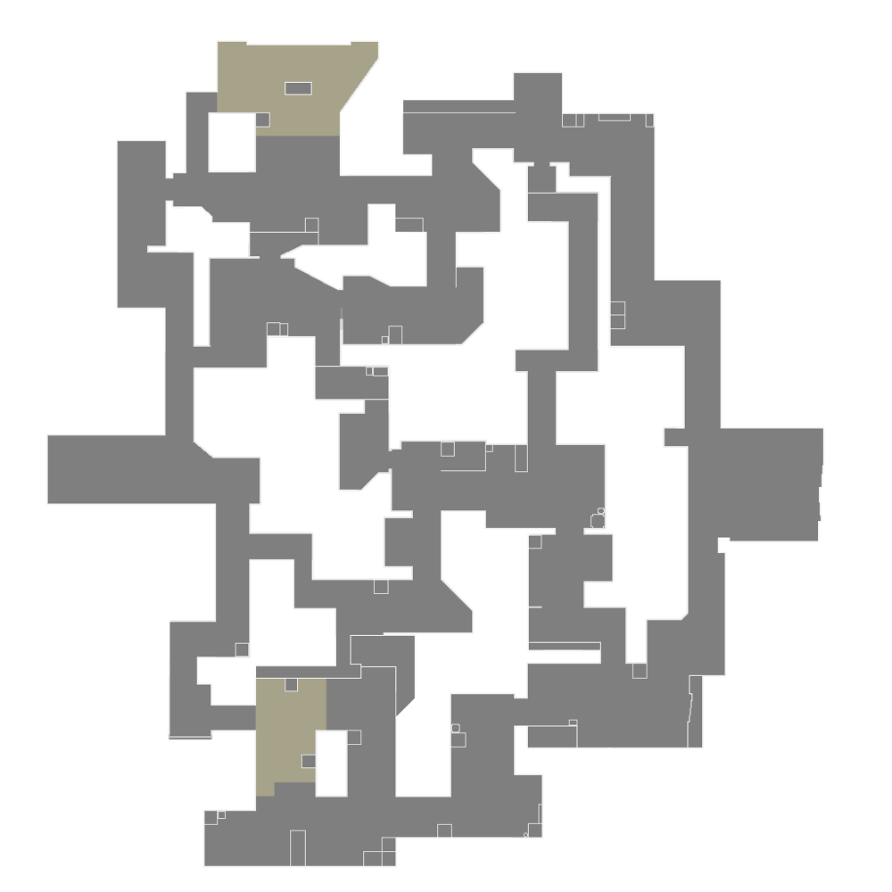

| Mapas de Valorant |
|  |
Nome |
Bind |
| Descrição |
O recurso exclusivo de Bind é que ele não contém uma seção intermediária, em vez disso, possui dois teletransportadores unidirecionais. Um leva jogadores de A Short para B Short e o outro leva jogadores de B Long para A Lobby. |
|  |
Nome |
Haven |
| Descrição |
Os recursos de Haven incluem um terceiro local de pico adicional. Isso não afeta o número de orbes finais no mapa; As duas esferas finais de Haven estão presentes em A Long e C Long (Dragão). |
|  |
Nome |
Split |
| Descrição |
As principais características do mapa envolvem a separação por uma região centralizada, o fornecimento de rápidas movimentações até a incursão aos bombsites, e uma mecânica de duas cordas presentes em três separados pontos de sua geografia, com foco para ligar as frentes A e B em direção ao meio da arena. |